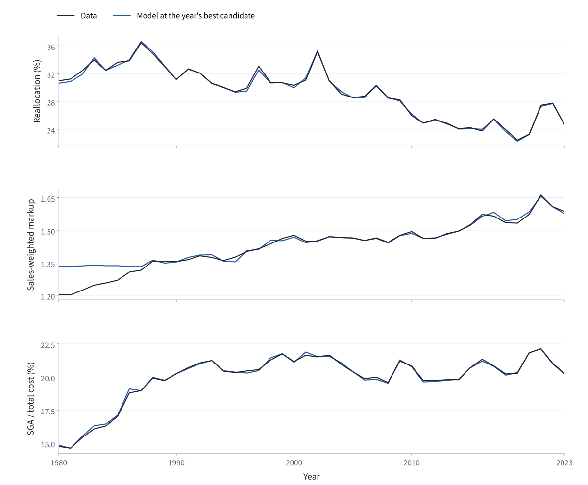

Solve, estimate and speed up an economic model
Follow one model of firms, markups and entry from its equations to an estimate for every year from 1980 to 2023. Test the estimates on a moment they were not fitted to, and make the computation faster. Each unit shows saved results in the browser and includes the Python code that produced them.
The economic model is based on De Loecker, Eeckhout and Mongey (2026), Quantifying Market Power and Business Dynamism in the Macroeconomy.
These are independent teaching notes by Zhongji Wei. They rebuild the model in Python and estimate it on the paper’s data. The course uses its own parameter values, so its results can differ from the paper’s. The notes do not represent the views of the paper’s authors. All errors are my own.
For readers who use models at work.
You run or estimate quantitative models and want to see each computational step: what goes in, what is solved, what comes out and how long it takes.
Every page works in the browser. The code is optional, and you can run it at your own pace.
After the course you can
- solve an economy with entry, exit and Cournot competition for given parameters;
- match model moments to data, directly (GMM) and by simulation (SMM);
- search thousands of parameter candidates and choose the best fit for each year;
- test the estimated model on a moment it was not fitted to;
- make the same computation faster with vectorization, parallel workers and GPU batches, and check that the results stay the same.
What you need.
- Python and NumPy: arrays, functions and loops.
- Demand elasticity and Cournot competition at the level of an intermediate microeconomics course. Two short guides cover the model’s building blocks: AB08 · Market shares and markups and Berry92 · Entry and market structure.
- A computer: a laptop runs the code for units 00–03 and 05 at a small scale. The full search over 44 years in unit 03 takes about 60 core-hours, about eight hours on a computer with eight cores. Unit 04 compares runs on up to 16 CPU cores and on NVIDIA GPUs.
What each unit teaches.
Times cover reading, the films and the tasks on each page.
- 00PrerequisiteDemand, costs, competition and entry, and how they fit together in one economy.About 30 minutes
- 01Moment MatchingEstimate one parameter from one statistic: compute the model’s moment directly (GMM), then by simulation (SMM).About 45 minutes
- 02One EconomyFind which firms operate, solve Cournot competition and the labor market, and trace three parameters to three moments.About 1 hour
- 03EstimationSolve 512 candidate economies for one year, keep the one that best fits the data, and repeat for 44 years.About 45 minutes
- 04Parallel Computing and AccelerationMake the same computation faster with vectorization, parallel workers and GPU batches, and compare the versions fairly.About 1.5 hours
- 05Untargeted MomentSplit the rise in the average markup into within-firm change, reallocation and net entry, and compare the model with the data.About 30 minutes
The optional coding exercises take longer. Symbols and terms explains the notation of all units on one page.
One estimate for each year, 1980–2023.
Unit 03 selects σ, N and ζ for every year: the candidate whose economy comes closest to that year’s three moments, which are employment reallocation, the sales-weighted markup and the SGA share of total cost. The figure compares the data with the model at each year’s estimate. Both lines show annual values. Unit 05 then tests these estimates on a moment they were not fitted to.

Everything is in one repository.
The model code, the lesson scripts, the data and this website are in github.com/weizj99/computational-economics-mp. You need Python 3.10 or later.
- Get the code.
git clone https://github.com/weizj99/computational-economics-mp.git cd computational-economics-mp - Install the packages.
python -m pip install -r requirements-teaching.txt - Solve a small economy of 200 markets. It takes about a second.
python run.py cpu --markets 200 --output outputs/example_cpu - Open this website on your computer.
Then go to http://127.0.0.1:8765/ in your browser.python run.py serve --site-dir 06_teaching
data/Moments.csv- The three observed moments for each year, 1980–2023.
data/boxes.csv- The search range for σ, N and ζ in each year.
data/Untargeted_Moment.csv- The split of the average markup used in unit 05.
Reuse it, with credit.
You may use, adapt and share the course, including for commercial purposes. The code is licensed under the Apache License 2.0; the text, figures and films under CC BY 4.0. Keep this credit with anything you reuse:
Based on Zhongji Wei, Computational Economics (2026). The economic model is from Jan De Loecker, Jan Eeckhout and Simon Mongey (2026), “Quantifying Market Power and Business Dynamism in the Macroeconomy,” Federal Reserve Bank of Minneapolis Staff Report 688.